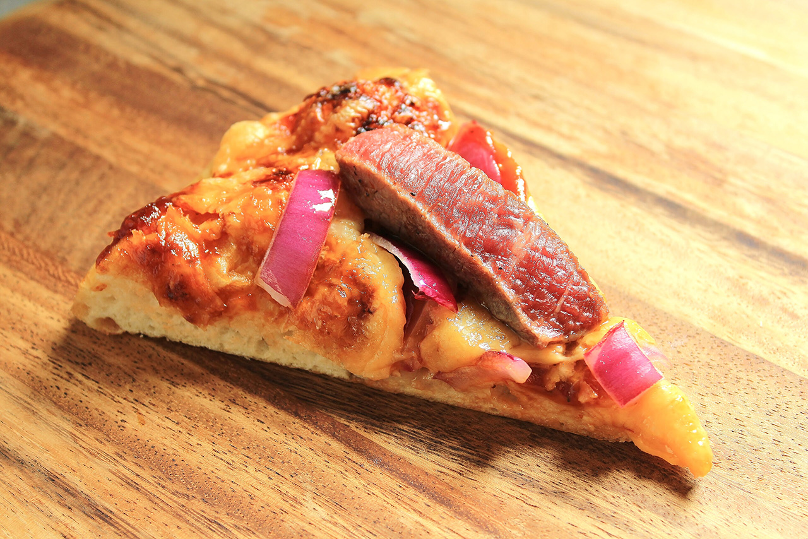

Onion Pizza Bread Topped with Seared Dragon Steak

“Mix flour, yeast, salt, and water in a bowl and knead well. Let it rest
for a bit. Shape it to your likin’ as you stretch it out and add your
choice of toppings. Lightly sprinkle flour onto a piece of dragon hide.
Then place it inside the [burning] dragon . . . Cut the meat into a block
shape. Place it on a heated scale, and after both sides are seared, dip it
into some seasoning. It’s ready! “
Ingredients
- 5 oz Gouda cheese (approx. 2 cups when shredded)
- 16 oz pizza dough
- 3 Tbsp olive oil, divided
- 1/2 cup barbecue sauce
- 1/2 red onion, cut into 1/4-inch strips
- 1 4.5-oz boneless steak
- 1/4 tsp salt
- 1/8 tsp pepper
Makes 1 12-inch onion pizza bread
Steps
-
Preheat oven to 450°F (or whatever temperature the packaging on your
pizza dough prescribes). If using a pizza stone, place it in the oven to
preheat. Alternatively, lightly grease a baking sheet with cooking oil
and set aside. Shred the Gouda and set aside.
-
Turn the dough out onto a lightly floured surface and punch it down with
floured hands. Roll the dough into a 12-inch circle, reflouring if
needed. If the dough is “fighting you” (springing back to a smaller
size), cover it with a clean kitchen towel and allow to rest for 5
minutes. This will allow the gluten to relax and make the dough more
pliable.
-
Remove your preheated baking stone from the oven and transfer the dough
to the stone. You can use a pizza peel if you have one, but I just
folded my dough over the top of my rolling pin and unfolded it onto the
stone.
-
Using the tips of your fingers, press dents all the way to the bottom of
the dough to prevent bubbling. Lightly brush the dough with 2
tablespoons olive oil. Spread the barbecue sauce evenly across the
dough, leaving a 1-inch ring around the edge. Sprinkle the Gouda on top.
Evenly distribute half the onion strips.
-
Transfer dough to the oven and bake for 12-15 minutes or until crust is
golden.
-
While you wait, place a small saute pan over medium-high heat. Coat the
the steak with remaining olive oil and sprinkle with salt and pepper.
When the pan is hot, sear on all sides for about 30 seconds or until
desired donenesss is reached (I wanted mine rare). Transfer to a plate
and allow to rest until pizza is finished.
-
If you want it to look like the pizza in the show, cut the steak into
1/4-inch thick planks and place on top of the pizza. However, the big
strips of steak can be difficult to bite cleanly without pulling the
whole piece off your pizza slice, so feel free to cut your steak into
bite-size pieces if show-accuracy isn’t a priority. Sprinkle remaining
onion strips on top.
-
Serve to your dungeon-crawling party as a reward for facing the
terrifying Red Dragon!
HOME